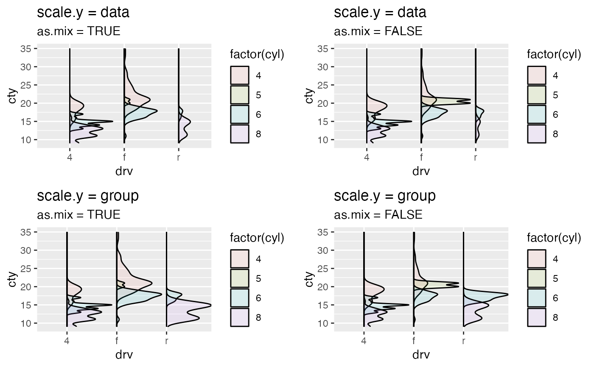

geom_density_.RdComputes and draws kernel density estimate.
Compared with geom_density(), it provides more general cases that
accepting x and y. See details
geom_density_(
mapping = NULL,
data = NULL,
stat = "density_",
position = "identity_",
...,
scale.x = NULL,
scale.y = c("data", "group", "variable"),
as.mix = FALSE,
positive = TRUE,
prop = 0.9,
na.rm = FALSE,
orientation = NA,
show.legend = NA,
inherit.aes = TRUE
)
stat_density_(
mapping = NULL,
data = NULL,
geom = "density_",
position = "stack_",
...,
bw = "nrd0",
adjust = 1,
kernel = "gaussian",
n = 512,
trim = FALSE,
na.rm = FALSE,
orientation = NA,
show.legend = NA,
inherit.aes = TRUE
)Set of aesthetic mappings created by aes(). If specified and
inherit.aes = TRUE (the default), it is combined with the default mapping
at the top level of the plot. You must supply mapping if there is no plot
mapping.
The data to be displayed in this layer. There are three options:
If NULL, the default, the data is inherited from the plot
data as specified in the call to ggplot().
A data.frame, or other object, will override the plot
data. All objects will be fortified to produce a data frame. See
fortify() for which variables will be created.
A function will be called with a single argument,
the plot data. The return value must be a data.frame, and
will be used as the layer data. A function can be created
from a formula (e.g. ~ head(.x, 10)).
Position adjustment, either as a string naming the adjustment
(e.g. "jitter" to use position_jitter), or the result of a call to a
position adjustment function. Use the latter if you need to change the
settings of the adjustment.
Other arguments passed on to layer(). These are
often aesthetics, used to set an aesthetic to a fixed value, like
colour = "red" or size = 3. They may also be parameters
to the paired geom/stat.
A sorted length 2 numerical vector representing the range of the whole data will be scaled to. The default value is (0, 1).
one of data and group to specify.
| Type | Description |
| data (default) | The density estimates are scaled by the whole data set |
| group | The density estimates are scaled by each group |
If the scale.y is data, it is meaningful to compare the density (shape and area) across all groups; else
it is only meaningful to compare the density within each group. See details.
Logical. Within each group, if TRUE, the sum of the density estimate area is mixed and
scaled to maximum 1. The area of each subgroup (in general, within each group one color represents one subgroup)
is proportional to the count; if FALSE the area of each subgroup is the same, with maximum 1. See details.
If y is set as the density estimate, where the smoothed curved is faced to,
right (`positive`) or left (`negative`) as vertical layout; up (`positive`) or down (`negative`) as horizontal layout?
adjust the proportional maximum height of the estimate (density, histogram, ...).
If FALSE, the default, missing values are removed with
a warning. If TRUE, missing values are silently removed.
The orientation of the layer. The default (NA)
automatically determines the orientation from the aesthetic mapping. In the
rare event that this fails it can be given explicitly by setting orientation
to either "x" or "y". See the Orientation section for more detail.
logical. Should this layer be included in the legends?
NA, the default, includes if any aesthetics are mapped.
FALSE never includes, and TRUE always includes.
It can also be a named logical vector to finely select the aesthetics to
display.
If FALSE, overrides the default aesthetics,
rather than combining with them. This is most useful for helper functions
that define both data and aesthetics and shouldn't inherit behaviour from
the default plot specification, e.g. borders().
Use to override the default connection between
geom_density() and stat_density().
The smoothing bandwidth to be used.
If numeric, the standard deviation of the smoothing kernel.
If character, a rule to choose the bandwidth, as listed in
stats::bw.nrd().
A multiplicate bandwidth adjustment. This makes it possible
to adjust the bandwidth while still using the a bandwidth estimator.
For example, adjust = 1/2 means use half of the default bandwidth.
Kernel. See list of available kernels in density().
number of equally spaced points at which the density is to be
estimated, should be a power of two, see density() for
details
If FALSE, the default, each density is computed on the
full range of the data. If TRUE, each density is computed over the
range of that group: this typically means the estimated x values will
not line-up, and hence you won't be able to stack density values.
This parameter only matters if you are displaying multiple densities in
one plot or if you are manually adjusting the scale limits.
The x (or y) is a group variable (categorical) and y (or x) is the target variable (numerical) to be plotted.
If only one of x or y is provided, it will treated as a target variable and
ggplot2::geom_density will be executed.
There are four combinations of scale.y and as.mix.
scale.y = "group" and as.mix = FALSEThe density estimate area of each subgroup (represented by each color) within the same group is the same.
scale.y = "group" and as.mix = TRUEThe density estimate area of each subgroup (represented by each color) within the same group is proportional to its own counts.
scale.y = "data" and as.mix = FALSEThe sum of density estimate area of all groups is scaled to maximum of 1. and the density area for each group is proportional to the its count. Within each group, the area of each subgroup is the same.
scale.y = "data" and as.mix = TRUEThe sum of density estimate area of all groups is scaled to maximum of 1 and the area of each subgroup (represented by each color) is proportional to its own count.
See vignettes[https://great-northern-diver.github.io/ggmulti/articles/histogram-density-.html] for more intuitive explanation.
This geom treats each axis differently and, thus, can thus have two orientations. Often the orientation is easy to deduce from a combination of the given mappings and the types of positional scales in use. Thus, ggplot2 will by default try to guess which orientation the layer should have. Under rare circumstances, the orientation is ambiguous and guessing may fail. In that case the orientation can be specified directly using the orientation parameter, which can be either "x" or "y". The value gives the axis that the geom should run along, "x" being the default orientation you would expect for the geom.
if(require(dplyr)) {
mpg %>%
dplyr::filter(drv != "f") %>%
ggplot(mapping = aes(x = drv, y = cty, fill = factor(cyl))) +
geom_density_(alpha = 0.1)
# only `x` or `y` is provided
# that would be equivalent to call function `geom_density()`
diamonds %>%
dplyr::sample_n(500) %>%
ggplot(mapping = aes(x = price)) +
geom_density_()
# density and boxplot
# set the density estimate on the left
mpg %>%
dplyr::filter(drv != "f") %>%
ggplot(mapping = aes(x = drv, y = cty,
fill = factor(cyl))) +
geom_density_(alpha = 0.1,
scale.y = "group",
as.mix = FALSE,
positive = FALSE) +
geom_boxplot()
# x as density
set.seed(12345)
suppressWarnings(
diamonds %>%
dplyr::sample_n(500) %>%
ggplot(mapping = aes(x = price, y = cut, fill = color)) +
geom_density_(orientation = "x", prop = 0.25,
position = "stack_",
scale.y = "group")
)
}
#> Warning: Groups with fewer than two data points have been dropped.
#> Warning: Groups with fewer than two data points have been dropped.
#> Warning: Removed 2 rows containing missing values (`position_stack()`).
# settings of `scale.y` and `as.mix`
# \donttest{
ggplots <- lapply(list(
list(scale.y = "data", as.mix = TRUE),
list(scale.y = "data", as.mix = FALSE),
list(scale.y = "group", as.mix = TRUE),
list(scale.y = "group", as.mix = FALSE)
),
function(vars) {
scale.y <- vars[["scale.y"]]
as.mix <- vars[["as.mix"]]
ggplot(mpg,
mapping = aes(x = drv, y = cty, fill = factor(cyl))) +
geom_density_(alpha = 0.1, scale.y = scale.y, as.mix = as.mix) +
labs(title = paste("scale.y =", scale.y),
subtitle = paste("as.mix =", as.mix))
})
suppressWarnings(
gridExtra::grid.arrange(grobs = ggplots)
)# }
